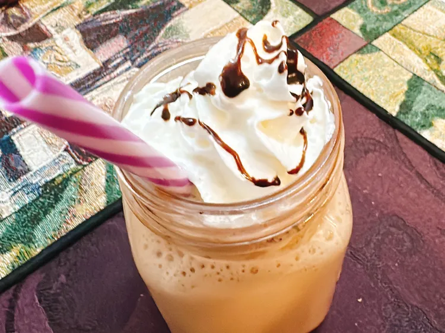

Below you will find the recipe and steps that are needed to create this High Protien Jamocha Shake! Hope you enjoy it!
Combine espresso, protien powder, frozen yogurt, milk, cocoa powder, and vanilla extract in the jar of a blender; blend until smooth.
Pour into a glass and top with whipped cream and a drizzle of chocolate syrup.